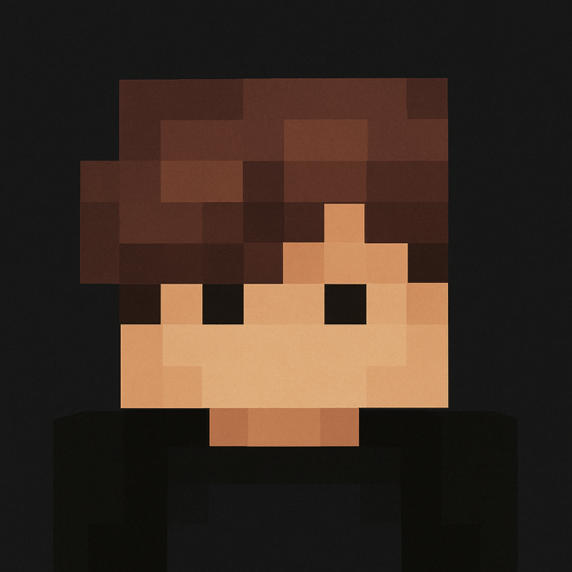

0xKevin
Desarrollador de plugins para Minecraft Bedrock (PocketMine-MP)
🧩 Plugins Destacados
- AntiCheat – Sistema básico de detección de trampas para servidores Bedrock.
- StaffMode – Herramientas útiles para el staff: invisibilidad, inspección y más.
ğŸ› ï¸ TecnologÃas que uso
PHP · YAML · JSON · PocketMine‑MP · Git · Visual Studio Code